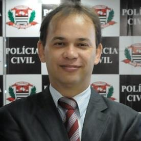

Palestra
Lei Carolina Dieckmann: Aspectos Legais e Implicações Jurídicas
Com o advento da Lei de Nº 12.737/2012, alcunhada de "Lei Carolina Dieckmann", o Brasil passou para o rol dos países com legislação para o combate de cibercrimes. Mas a lei já em vigor é suficiente para reprimir a criminalidade sem praticar injustiças? Como ficam o cidadão comum e pesquisadores frente aos dispositivos estabelecidos por esta lei? Haverá impactos no cotidiano das pessoas e o acesso à internet? Estas questões e muitas outras serão objeto de análise e comentário através desta apresentação.
Palestrante
 Delegado José Mariano de Araújo Filho: Bacharel em Direito pela Universidade Braz Cubas de São Paulo; Pós-graduado em Direito Comercial pela Universidade de São Paulo; Técnico em Eletrônica pelo Escola Albert Einstein da Fundação Paula Souza; É Delegado da Polícia Civil de São Paulo desde de 1991, aprovado por concurso público, tendo sido Titular da Delegacia de Crimes Eletrônicos da Polícia Civil de São Paulo, onde prestou serviços por 06 (seis) anos, além de ter atuado na Unidade de Inteligência Policial do D.E.I.C. - Departamento de Investigações Sobre o Crime Organizado de São Paulo; É professor concursado de Sistemas Policiais e Investigação de Crimes Praticados por Meios Eletrônicos da Academia da Polícia Civil de São Paulo desde 1995; É professor de Investigação de Cibercrimes no MBA de Direito Eletrônico da Escola Paulista de Direito; Foi Professor de Direito Comercial e Direito Penal na Graduação e na Pós-graduação da Universidade Camilo Castelo Branco e Universidade Bandeirante na cidade de São Paulo; É membro consultor da Comissão de Crimes de Alta Tecnologia da O.A.B. de São Paulo e da Comissão de Ciência e Tecnologia, ambas da Ordem dos Advogados do Brasil; É membro associado ao I.S.S.A. - Associação de Segurança em Sistemas de Informação; É professor convidado na pós-graduação em Forense Computacional da Faculdade Impacta de Tecnologia.